Teil 1 · Didaktik 2.2 · Generation a3ce3d7f1e8f82b2

Bei Nacht kehrst du zum Logitmarkt zurück. Die Nachtkugel NK-1 zählt Stimmen aus der Hafenchronik mit 46 Zetteln und zieht daraus Antworten. Du wählst auf drei Hüpffeldern deine Vorhersage, bevor das Licht angeht. Häufige, seltene und fehlende Fakten verhalten sich unterschiedlich; alle Antworten klingen zunächst gleich flüssig. Quirins Glas macht die Gegenprobe sichtbar. Ein frühes falsches Stück kann weitere passende falsche Stücke nach sich ziehen. In der Geschichtenzeit wird dieselbe Erzeugung ausdrücklich zum Erfinden eingeladen.
Vergleiche oft, selten und nie belegte Fakten. Verfolge den Schneeball, frage fünfmal und untersuche die fünf Laternen: Quelle, Werkzeug, Antwortprüfung, Temperatur und Ehrlich-offen-Regel.
Häufigkeit ist kein Wahrheitsbeweis. Mehrfachfragen können wechselnden Nebel oder denselben gelernten Irrtum zeigen. Die Laternen wirken auf verschiedene Fehler und haben eigene Kosten. Die Stadt schaltet kein verlässliches Warnlicht ein. Beim als Geschichte markierten Erfinden ist Fantasie erwünscht; danach entzünden sich die Brückenlaternen.
Trenne das Prüflicht der Lernenden vom Verhalten der Stadt. Prüfe Belege, Fehlerart und Kosten des Gegenmittels. Weder Temperatur null noch eine Quelle beseitigt Nebel zuverlässig. Der Stempelamt-Schreiber kann weiter mitschreiben.